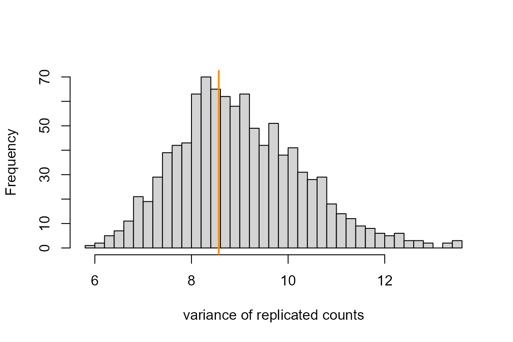
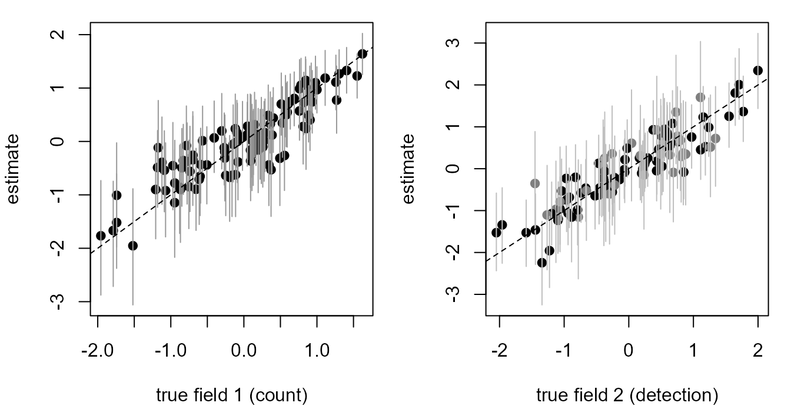
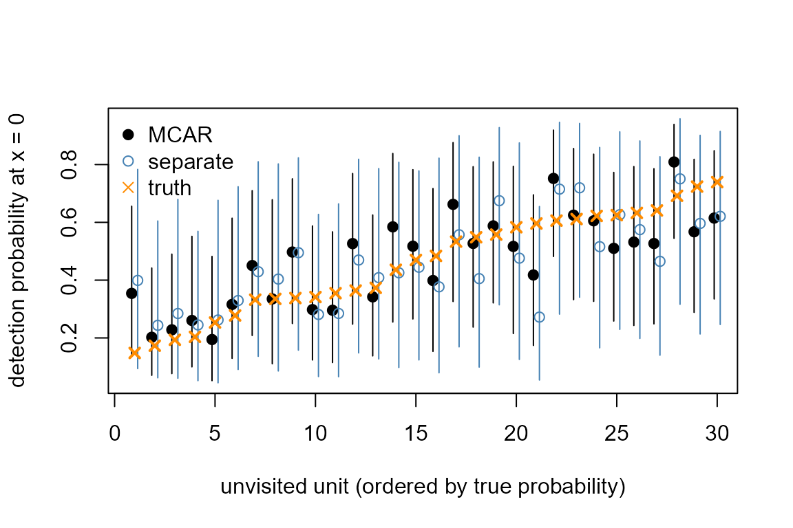
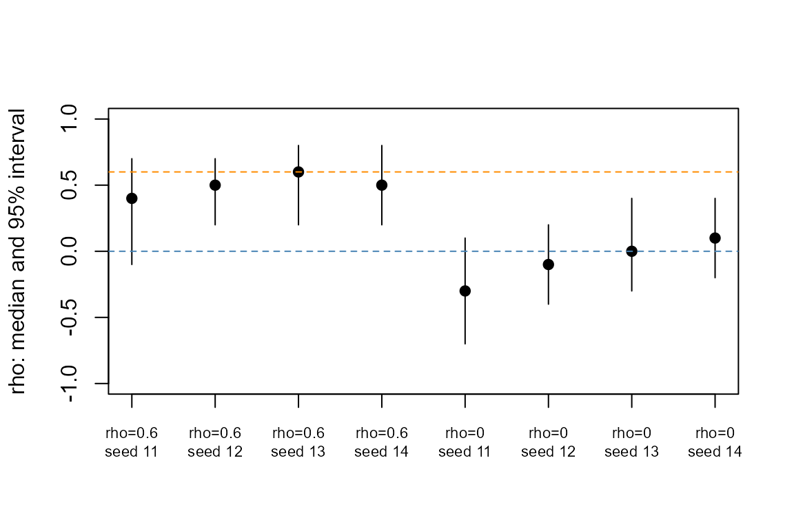

Multivariate areal fields
Source:vignettes/articles/multivariate-spatial.Rmd
multivariate-spatial.RmdTwo responses recorded on the same map units often follow related spatial patterns: the abundance of a plant and the detection rate of its pollinator, or the incidence of two diseases with a shared exposure. This article gives each response its own spatial field and lets the two fields be correlated, a multivariate conditional autoregressive (MCAR) model. It simulates two fields with a known cross-response correlation, fits them jointly, reads the correlation back, predicts the second response at units where it was never recorded, and compares the joint model with correlated unit effects that ignore the map (MIID) and with two independent fits. The Joint models article covers responses that share one field through a copy scale and introduces the joint fitter used here. Installation is covered in Get started.
The model
Two response arms share the map units . Index the observations of the first arm by and those of the second by , and let and denote the unit an observation was taken in. The first arm is Poisson and the second binomial with trials:
Each arm has its own intercept and slope on its own covariate, and its own field: and each hold one value per unit. The two fields are stacked into with the separable prior
where is the intrinsic CAR (ICAR) structure of the graph, its adjacency matrix and the diagonal matrix of neighbour counts. Within one field, makes neighbouring units similar. Across the two fields, sets the amplitude of each (, ) and the correlation between them at every unit. Each field sums to zero over the units, because leaves its level undetermined and the arm’s intercept carries it.
Setting gives two independent ICAR fields, which is the same model as fitting each response on its own. Replacing by the identity gives the multivariate IID (MIID) model: the two responses are still correlated at each unit, but neighbouring units are no more alike than distant ones.
tulpa_nested_laplace_joint() integrates
on an outer grid in the log-Cholesky coordinates of
:
,
and
. At each grid cell an
inner Laplace approximation solves for the four coefficients and the
field values together. The default hyperprior gives each
a penalized-complexity prior with
and
an LKJ prior of shape 2, whose density in two dimensions is proportional
to
.
Simulating data
The map is a 10 by 10 lattice, each unit a neighbour of the units
directly above, below, left and right of it. The adjacency goes to the
engine in compressed sparse row form, as in Joint models; W is the same
graph as a dense matrix, used to simulate the fields.
nr <- 10L; nc <- 10L; S <- nr * nc
rc <- expand.grid(r = seq_len(nr), c = seq_len(nc))
nb <- lapply(seq_len(S), function(s)
which(abs(rc$r - rc$r[s]) + abs(rc$c - rc$c[s]) == 1))
nn <- lengths(nb)
graph <- list(n_spatial_units = S, adj_row_ptr = c(0L, cumsum(nn)),
adj_col_idx = unlist(nb) - 1L, n_neighbors = nn)
W <- matrix(0, S, S)
for (s in seq_len(S)) W[s, nb[[s]]] <- 1The true fields have , and . They are drawn as two independent smooth fields, mixed by the Cholesky factor of and centred. The smooth fields come from a CAR precision , which is proper and therefore has a factor to draw with, and is close to the ICAR structure of the model.
sim_fields <- function(rho, s1 = 1, s2 = 0.8) {
Sigma <- matrix(c(s1^2, rho * s1 * s2, rho * s1 * s2, s2^2), 2)
R <- chol(diag(nn) - 0.99 * W)
z <- sapply(1:2, function(k) backsolve(R, rnorm(S)))
f <- z %*% chol(Sigma)
sweep(f, 2, colMeans(f))
}The first arm counts a species three times in every unit, with an intercept of 0.5 and a slope of 0.4. The second arm records how many of ten trials detected a second species, three times in each of 70 units, with an intercept of and a slope of 0.8. The remaining 30 units have no data for the second arm.
sim_obs <- function(f) {
s1 <- rep(seq_len(S), each = 3L); x1 <- rnorm(length(s1))
visited <- sort(sample(S, 70L))
s2 <- rep(visited, each = 3L); x2 <- rnorm(length(s2))
list(f = f, visited = visited, s1 = s1, x1 = x1, s2 = s2, x2 = x2,
y1 = rpois(length(s1), exp(0.5 + 0.4 * x1 + f[s1, 1])),
y2 = rbinom(length(s2), 10L, plogis(-0.3 + 0.8 * x2 + f[s2, 2])))
}
set.seed(1)
dat <- sim_obs(sim_fields(rho = 0.6))
c(cor = cor(dat$f)[1, 2], sd1 = sd(dat$f[, 1]), sd2 = sd(dat$f[, 2]))
#> cor sd1 sd2
#> 0.5472979 0.8024354 0.8760067The printed values are the correlation and standard deviations of the fields this seed drew: 0.55 against , and 0.80 and 0.88 against and . They differ because 100 units are a small sample of the prior, and because scales an ICAR field whose own spread depends on the lattice.
Fitting
Each arm is a list holding its response, trial counts, design matrix and family, as in Joint models. The unit index moves from the arms to the field block, because the block reaches both arms.
make_arms <- function(d) {
list(count = list(y = d$y1, n_trials = rep(1L, length(d$y1)),
X = cbind(1, x = d$x1), family = "poisson"),
detect = list(y = d$y2, n_trials = rep(10L, length(d$y2)),
X = cbind(1, x = d$x2), family = "binomial"))
}
arms <- make_arms(dat)An MCAR block is a list with type = "mcar", the graph,
n_fields = 2 and two per-arm lists.
spatial_idx gives the unit of every observation, one vector
per arm. field_weight says how strongly each field enters
each arm: one entry per field, each a list over the arms of per-row
weights. Field 1 enters the count arm with weight 1 and the detection
arm with weight 0, and field 2 the other way round, so each response
carries its own field.
mcar_block <- function(d, type = "mcar") {
n1 <- length(d$y1); n2 <- length(d$y2)
w <- list(list(rep(1, n1), rep(0, n2)), list(rep(0, n1), rep(1, n2)))
if (type == "mcar")
c(list(type = "mcar", n_fields = 2L, field_weight = w,
spatial_idx = list(d$s1, d$s2)), graph)
else
list(type = "miid", n_fields = 2L, field_weight = w, n_groups = S,
obs_idx = list(d$s1, d$s2))
}Without a logchol_grid the block takes the engine’s
default outer grid for two fields: four values of each
(0.4, 0.7, 1.1, 1.7) and six of
,
96 cells. A finer grid resolves
in steps of 0.1. It is laid in
and converted to the log-Cholesky columns the engine reads.
sds <- exp(seq(log(0.3), log(2), length.out = 7))
g <- expand.grid(s1 = sds, s2 = sds, rho = seq(-0.9, 0.9, by = 0.1))
logchol <- cbind(L11 = log(g$s1), L21 = g$rho * g$s2,
L22 = log(g$s2 * sqrt(1 - g$rho^2)))
nrow(logchol)
#> [1] 931The block goes to prior as the only element of a list of
blocks.
ctl <- list(n_threads = 2L, store_Q = TRUE, progress = FALSE)
blk <- c(mcar_block(dat), list(logchol_grid = logchol))
fit <- tulpa_nested_laplace_joint(responses = arms, prior = list(blk),
control = ctl)
summary(fit)
#> tulpa fit (nested_laplace_joint)
#> n_obs: 510
#>
#> Fixed effects:
#> estimate std.error 2.5 % 97.5 %
#> count.beta1 0.5512 0.12079 0.2561 0.72960
#> count.x 0.4549 0.04706 0.3655 0.55000
#> detect.beta1 -0.2530 0.13846 -0.5327 0.01003
#> detect.x 0.8640 0.06207 0.7669 1.01018
#> interval read: skew_map_cell
#> interval declined: skew_correct: gamma_3 is retained at the MAP cell only, so the mixture components carry no per-cell skew to compose; the coefficients it declines keep the read they would have had
#>
#> Hyperparameters:
#> parameter mean sd median ci_lo ci_hi
#> b1.L11 0.08092 0.1052 0.081175 -0.1267 0.2893
#> b1.L21 0.68822 0.1711 0.685252 0.3503 1.0303
#> b1.L22 -0.02557 0.1387 -0.008743 -0.2790 0.2402
#> b1.sigma_1 1.09069 0.1159 1.084601 0.8811 1.3354
#> b1.sigma_2 1.21097 0.1417 1.201213 0.9631 1.5160
#> b1.rho_12 0.56639 0.1180 0.576464 0.3072 0.7664
#> b1.Sigma_11 1.20305 0.2577 1.176360 0.7763 1.7833
#> b1.Sigma_12 0.75454 0.2236 0.737836 0.3620 1.2423
#> b1.Sigma_22 1.48651 0.3519 1.442912 0.9276 2.2981
#>
#> Reliability (iid draws):
#> outer pareto_k -0.6028 (good); grid ESS 90.27 of 1571 cells; inner skew 0.04413 (good)
#> verdict: reliable (both layers good)The coefficients are prefixed by the arm name. The detection slope comes back at 0.86 against a true 0.8, and the count slope at 0.45 against 0.4. A Poisson regression of the same counts with the true field as an offset shows what the counts alone say about the count slope:
coef(glm(dat$y1 ~ dat$x1 + offset(dat$f[dat$s1, 1]), family = poisson))
#> (Intercept) dat$x1
#> 0.5070082 0.4605410With the field known exactly the slope is 0.46, so the distance from
0.4 comes from the simulated counts. The hyperparameter table reports
the three log-Cholesky coordinates and, derived from them, the two
amplitudes, the correlation b1.rho_12 and the entries of
.
The next section reads the posterior of
off the grid itself.
Reading the cross-response correlation
tulpa_outer_grid() returns the grid cell by cell: its
coordinates in nodes and its normalized weight in
weights. The correlation of each cell is
,
with
on the natural scale of
.
Summing the weights over the cells at each
level gives the posterior of
on the grid’s levels.
sigma_rho <- function(nodes) {
l21 <- nodes[, "b1.L21"]; l22 <- exp(nodes[, "b1.L22"])
s2 <- sqrt(l21^2 + l22^2)
cbind(sigma1 = exp(nodes[, "b1.L11"]), sigma2 = s2, rho = l21 / s2)
}
og <- tulpa_outer_grid(fit)
p_rho <- tapply(og$weights, round(sigma_rho(og$nodes)[, "rho"], 1), sum)
round(p_rho[p_rho > 0.001], 3)
#> 0.2 0.3 0.4 0.5 0.6 0.7 0.8
#> 0.008 0.035 0.113 0.251 0.344 0.224 0.024
plot(as.numeric(names(p_rho)), p_rho, type = "h", lwd = 6,
xlab = "cross-response correlation rho", ylab = "posterior weight")
abline(v = 0.6, lty = 2)The weight sits between 0.2 and 0.8 and peaks at 0.6. Reading the cumulative weight over the levels gives the median and a 95% interval for , and the same weights give posterior means of the two amplitudes:
lev <- as.numeric(names(p_rho)); cw <- cumsum(p_rho)
c(lo = lev[which(cw >= 0.025)[1]], median = lev[which(cw >= 0.5)[1]],
hi = lev[which(cw >= 0.975)[1]])
#> lo median hi
#> 0.3 0.6 0.7
colSums(og$weights * sigma_rho(og$nodes))
#> sigma1 sigma2 rho
#> 1.0903063 1.2130964 0.5656558The interval for runs from 0.3 to 0.7 with its median at 0.6, and contains both the true and the 0.55 the drawn fields show. The posterior means of the amplitudes are 1.09 and 1.21 against the true 1 and 0.8. The second sits above both its true value and the 0.88 spread of the drawn field.
Checking the fit
diagnostics() grades the outer grid that integrates
.
diagnostics(fit)
#> Device: inference=cpu, sparse_cholesky=cpu, sparse_inverse_host_factor=cpu
#> Nested-Laplace WHOLE-FIT reliability (i.i.d. draws)
#> two layers: the outer hyperparameter-grid integration, and the inner
#> Gaussian Laplace on the latent field
#> outer PSIS pareto_k = -0.603 (good); IS-ESS = 305.9
#> proposal: grid_mixture
#> outer grid quadrature ESS = 90.27 of 1571 cells (max weight 0.025)
#> hyperparameter integration contributes 0.1-2.0% of the fixed-effect marginal variance
#> note: outer grid coarser than its own posterior on b1.L22 (cell width / posterior SD = 5.80, both in that axis's own coordinate): the reported interval's endpoints are resolved to within one cell, so part of their width and their realized coverage are properties of where the grid fell rather than of the posterior -- the auto-placement pass reads that axis as PINNED, so it was left exactly where it was declared: mark it with `auto_grid()` (or drop it and let the engine place it) to have the pass size it to the posterior instead of adding nodes by hand
#> inner Laplace max |gamma_3| = 0.044 (good), scored 4/4 latents
#> inner Laplace importance pareto_k = 0.575 (good), min IS efficiency 0.9994, scored 4/4 latents
#> the importance weights are uniform on every probed index: the inner
#> Gaussian reproduces the conditional posterior over the sampled region,
#> so the shape above describes no correction and is not banded
#> whole-fit verdict: reliable (both layers good)
#> per-parameter columns: none.
#> the fit carries no posterior draws, so the per-parameter mean / sd / per-parameter columns are empty; tulpa_posterior_draws(fit) samples the retained outer-grid mixture if a sample is wantedThe outer integration and the inner Laplace layer both grade as good.
The note on b1.L22 says that axis’s cells are 5.8 posterior
standard deviations wide: seven
levels between 0.3 and 2 are coarse against how well the data pin that
coordinate, so its interval ends are resolved only to within one cell.
The
axis is the one this article reads, in steps of 0.1.
A posterior predictive check compares the count arm with counts
replicated from the fit. tulpa_posterior_draws() samples
the latent vector from the fitted grid mixture: one row per draw, the
four coefficients first and then the field block, field 1 in the first
columns of the block and field 2 in the next
.
fit$arm_layout$field_starts gives the offset of the
block.
set.seed(2)
d <- tulpa_posterior_draws(fit, n = 1000)
fs <- fit$arm_layout$field_starts
u1 <- d[, fs + seq_len(S)]
u2 <- d[, fs + S + seq_len(S)]The replicated variance of the counts, one value per draw, is set against the observed variance:
eta1 <- d[, 1] + outer(d[, 2], dat$x1) + u1[, dat$s1]
yrep <- matrix(rpois(length(eta1), exp(eta1)), nrow = nrow(eta1))
v_rep <- apply(yrep, 1, var)
hist(v_rep, breaks = 30, main = "", xlab = "variance of replicated counts")
abline(v = var(dat$y1), lwd = 2, col = "darkorange")
The observed variance falls inside the replicated distribution, and the printed share is the posterior predictive p-value of that statistic.
Interpreting the fields
The two fields are set against their true values, unit by unit, with 95% intervals from the draws. Field 2 is drawn in grey at the 30 units the detection arm never visited.
q1 <- apply(u1, 2, quantile, c(0.025, 0.5, 0.975))
q2 <- apply(u2, 2, quantile, c(0.025, 0.5, 0.975))
unvisited <- setdiff(seq_len(S), dat$visited)
op <- par(mfrow = c(1, 2), mar = c(4, 4, 1, 1))
plot(dat$f[, 1], q1[2, ], pch = 19, ylim = range(q1),
xlab = "true field 1 (count)", ylab = "estimate")
segments(dat$f[, 1], q1[1, ], dat$f[, 1], q1[3, ], col = "grey60")
abline(0, 1, lty = 2)
col2 <- ifelse(seq_len(S) %in% unvisited, "grey50", "black")
plot(dat$f[, 2], q2[2, ], pch = 19, col = col2, ylim = range(q2),
xlab = "true field 2 (detection)", ylab = "estimate")
segments(dat$f[, 2], q2[1, ], dat$f[, 2], q2[3, ], col = "grey75")
abline(0, 1, lty = 2)
par(op)
c(cor_field1 = cor(q1[2, ], dat$f[, 1]), cor_field2 = cor(q2[2, ], dat$f[, 2]))
#> cor_field1 cor_field2
#> 0.8921057 0.8988417Both fields lie along the identity line, with correlations of 0.89 and 0.90 between estimate and truth. The ICAR prior pulls each unit toward its neighbours, which flattens the extremes of each surface.
Prediction where one response has no data
At the 30 unvisited units the detection arm has no observations. A fit of the detection data alone can only interpolate its field there from neighbouring visited units. The MCAR fit can also read the count field at the same unit and carry it over through . The separate fit is a joint fit with one arm and an ICAR block, as in Joint models, whose field is the amplitude times a unit-precision ICAR vector.
icar <- c(list(type = "icar"), graph)
sep_count <- c(arms$count, list(spatial_idx = dat$s1))
sep_detect <- c(arms$detect, list(spatial_idx = dat$s2))
fit_c <- tulpa_nested_laplace_joint(list(count = sep_count), icar,
control = ctl)
fit_d <- tulpa_nested_laplace_joint(list(detect = sep_detect), icar,
control = ctl)
set.seed(3)
dd <- tulpa_posterior_draws(fit_d, n = 1000)
ud <- attr(dd, "theta")[, "sigma"] *
dd[, fit_d$arm_layout$phi_start + seq_len(S)]u2 holds the MCAR draws of field 2 and ud
the separate fit’s draws of the same field. On the unvisited units each
is compared with the truth: the root mean squared error of the posterior
mean, the mean width of the 95% interval and the share of intervals that
contain the true value.
score <- function(u) {
q <- apply(u[, unvisited], 2, quantile, c(0.025, 0.975))
truth <- dat$f[unvisited, 2]
c(rmse = sqrt(mean((colMeans(u[, unvisited]) - truth)^2)),
width = mean(q[2, ] - q[1, ]),
coverage = mean(q[1, ] <= truth & truth <= q[2, ]))
}
round(rbind(mcar = score(u2), separate = score(ud)), 3)
#> rmse width coverage
#> mcar 0.468 2.466 1
#> separate 0.522 3.451 1The MCAR fit predicts field 2 at the unvisited units with an error of 0.47 against 0.52 for the separate fit. Its intervals are 2.5 wide on average against 3.5, and both sets contain the truth at all 30 units. The detection probability at those units, for a covariate value of zero, follows from each draw as :
p_mcar <- plogis(d[, 3] + u2[, unvisited])
p_sep <- plogis(dd[, 1] + ud[, unvisited])
p_true <- plogis(-0.3 + dat$f[unvisited, 2])
qm <- apply(p_mcar, 2, quantile, c(0.025, 0.5, 0.975))
qs <- apply(p_sep, 2, quantile, c(0.025, 0.5, 0.975))
o <- order(p_true); k <- seq_along(o)
plot(k - 0.15, qm[2, o], pch = 19, ylim = range(qm, qs),
xlab = "unvisited unit (ordered by true probability)",
ylab = "detection probability at x = 0")
segments(k - 0.15, qm[1, o], k - 0.15, qm[3, o])
points(k + 0.15, qs[2, o], pch = 1, col = "steelblue")
segments(k + 0.15, qs[1, o], k + 0.15, qs[3, o], col = "steelblue")
points(k, p_true[o], pch = 4, col = "darkorange", lwd = 2)
legend("topleft", c("MCAR", "separate", "truth"), pch = c(19, 1, 4),
col = c("black", "steelblue", "darkorange"), bty = "n")
Model comparison: MCAR, MIID and two independent fits
The MIID block has the same field_weight and replaces
the graph by n_groups and the unit index by
obs_idx. It takes the same outer grid.
blk_i <- c(mcar_block(dat, type = "miid"), list(logchol_grid = logchol))
fit_i <- tulpa_nested_laplace_joint(responses = arms, prior = list(blk_i),
control = ctl)
og_i <- tulpa_outer_grid(fit_i)
colSums(og_i$weights * sigma_rho(og_i$nodes))
#> sigma1 sigma2 rho
#> 0.8175236 1.0154240 0.4126673The MIID fit also finds a positive correlation between the two responses, a posterior mean of 0.41: units with high counts tend to have high detection rates, and MIID reads that without using the map.
logLik() on a joint fit returns the log evidence: the
marginal likelihood integrated over the outer grid with the hyperpriors.
The two independent fits model disjoint observations, so the evidence of
the independent model is the sum of their two evidences.
ev <- c(mcar = logLik(fit), miid = logLik(fit_i),
independent = logLik(fit_c) + logLik(fit_d))
round(cbind(log_evidence = ev, difference = ev - max(ev)), 1)
#> log_evidence difference
#> mcar -961.2 0.0
#> miid -989.4 -28.2
#> independent -967.3 -6.1The MCAR model sits 6.1 log units above the two independent fits, which have the same spatial fields with held at zero. The MIID model sits 28.2 below the MCAR model: the correlation between the responses does not replace the similarity of neighbouring units.
Repeating the simulation
One seed shows one draw of the data. Four seeds at and four at , each fitted on the same grid, show how the interval for behaves when there is a correlation to find and when there is none.
rho_interval <- function(seed, rho) {
set.seed(seed)
d <- sim_obs(sim_fields(rho))
b <- c(mcar_block(d), list(logchol_grid = logchol))
f <- tulpa_nested_laplace_joint(make_arms(d), list(b), control = ctl)
og <- tulpa_outer_grid(f)
p <- tapply(og$weights, round(sigma_rho(og$nodes)[, "rho"], 1), sum)
lev <- as.numeric(names(p)); cw <- cumsum(p)
c(rho = rho, seed = seed, lo = lev[which(cw >= 0.025)[1]],
median = lev[which(cw >= 0.5)[1]], hi = lev[which(cw >= 0.975)[1]])
}
rep_tab <- do.call(rbind, lapply(c(0.6, 0), function(r)
t(sapply(11:14, rho_interval, rho = r))))
rep_tab
#> rho seed lo median hi
#> [1,] 0.6 11 -0.1 0.4 0.7
#> [2,] 0.6 12 0.2 0.5 0.7
#> [3,] 0.6 13 0.2 0.6 0.8
#> [4,] 0.6 14 0.2 0.5 0.8
#> [5,] 0.0 11 -0.7 -0.3 0.1
#> [6,] 0.0 12 -0.4 -0.1 0.2
#> [7,] 0.0 13 -0.3 0.0 0.4
#> [8,] 0.0 14 -0.2 0.1 0.4
k <- seq_len(nrow(rep_tab))
plot(k, rep_tab[, "median"], pch = 19, ylim = c(-1, 1), xaxt = "n",
xlab = "", ylab = "rho: median and 95% interval")
segments(k, rep_tab[, "lo"], k, rep_tab[, "hi"])
axis(1, at = k, labels = paste0("rho=", rep_tab[, "rho"], "\nseed ",
rep_tab[, "seed"]), padj = 0.5, cex.axis = 0.7)
abline(h = c(0.6, 0), lty = 2, col = c("darkorange", "steelblue"))
All eight intervals contain their true value. At the medians run from 0.4 to 0.6 and the interval widths from 0.5 to 0.8; at the medians run from to 0.1 and the widths from 0.6 to 0.8.
The same model through tulpa()
When both responses have the same family, tulpa()
reaches the MCAR model through its inline spatial() term.
The two responses are stacked into one data frame with an indicator
column per response. A single bar in ~ 0 + ia + ib | cell
builds one field per indicator column, correlated across the columns,
and xa, xb give each response its own
slope.
set.seed(5)
f5 <- sim_fields(rho = 0.6)
cell <- rep(seq_len(S), each = 3L); n <- length(cell)
x <- rnorm(2 * n)
long <- data.frame(cell = c(cell, cell), ia = rep(1:0, each = n),
ib = rep(0:1, each = n), x = x)
long$xa <- long$ia * long$x
long$xb <- long$ib * long$x
eta <- ifelse(long$ia == 1, 0.5 + 0.4 * x + f5[long$cell, 1],
0.2 - 0.3 * x + f5[long$cell, 2])
long$y <- rpois(2 * n, exp(eta))
fit_fd <- tulpa(y ~ 0 + ia + ib + xa + xb +
spatial(graph = W, formula = ~ 0 + ia + ib | cell),
data = long, family = "poisson")
fit_fd
#> tulpa fit: inline spatial() varying-coefficient field(s)
#> N = 600 fixed effects = 4
#>
#> Fixed effects (posterior mean):
#> ia ib xa xb
#> 0.5501 0.1735 0.3346 -0.3057
#>
#> Correlated areal fields (separable MCAR):
#> cell.ia, cell.ib
#> Cross-covariance Sigma (marginalized over the grid):
#> sigma_1 0.954 (95% CI 0.763, 1.193)
#> sigma_2 0.969 (95% CI 0.757, 1.240)
#> rho_12 0.363 (95% CI 0.043, 0.615)
#> Sigma_11 0.910 (95% CI 0.582, 1.424)
#> Sigma_12 0.333 (95% CI 0.034, 0.633)
#> Sigma_22 0.939 (95% CI 0.574, 1.537)The printed rho_12 is the cross-response correlation,
read from the outer grid by the front door: 0.36 with a 95% interval
from 0.04 to 0.62 on this seed, against a true 0.6. The slopes come back
at 0.33 and
against 0.4 and
.
Mixed families, such as the counts and detections above, and the MIID
model are fitted with tulpa_nested_laplace_joint().
Practical guidance
- Use MCAR when both responses are spatially structured and you want their correlation. On the data above it gained 6.1 log units of evidence over two independent fits, and 28.2 over MIID.
- The correlation is read off the units. With 100 units the 95% interval for was 0.4 to 0.8 wide across nine fits (0.3 to 0.7 on the main data). Fewer units widen it: the fields’ own sample correlation varies from seed to seed around (0.55 on the main seed at ), and the posterior cannot be narrower than that variation.
-
Lay the grid in
.
The default 96-cell grid has
levels at
,
,
0, 0.4, 0.7 and 0.9 only, so an interval read from it lands on those
values. The 931-cell grid above, seven levels per
and 19 of
,
is fine enough for
;
diagnostics()names an axis whose cells are wide against its posterior, as it did for the coordinate. - The gain from the correlation is largest where one response is missing. At the 30 unvisited units the error of field 2 fell from 0.52 to 0.47 and the interval width from 3.5 to 2.5.
-
is the amplitude of an unscaled ICAR field. Compare fields on
the scale of
,
drawn with
tulpa_posterior_draws(), rather than comparing across lattices. - MCAR does not replace a shared driver. If one unmeasured variable drives both responses at different strengths, a single field copied onto the second arm (Joint models) has two hyperparameters ( and the copy scale) where MCAR has three. MCAR is the model when each response also has spatial structure of its own.
- Do not use MIID for spatial data. It found the correlation here but sat 28.2 log units below MCAR, and it predicts an unvisited unit from the other response alone, with no help from neighbouring units.
See also
- Joint models: two arms sharing one field through a copy scale.
- Spatial models: a single areal field.
- Random slopes: correlated random effects within one response.
- Model comparison: log evidence and its use across fits.
-
?spatial: the inlinespatial()term and its single and double bars.